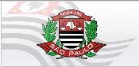

Pessoal, os amigos leitores do CdP avisaram nos comentários do post sobre o concurso para Investigador e Escrivão da Polícia Civil de São Paulo, e está aberto o período para se inscrever. As inscrições vão de 22 de setembro até 03 de outubro de 2008, e devem ser feitas no site da Nossa Caixa, através deste link.
São 864 vagas para Escrivão e 1.449 vagas para Investigador de Polícia, sendo 5% de cada reservadas à portadores de deficiência física, conforme manda a lei. Para ambos, a taxa de inscrição é no valor de R$ 32,74, e o salário constante no edital do concurso é de R$ 1.729,82 brutos, somadas todas as gratificações possíveis.
Serão cobrados nas provas conhecimento de a Língua Portuguesa, Noções de Direito, Noções de Criminologia, Atualidades, Lógica e Informática. Quanto aos testes de conhecimento, serão três fases, a primeira com questões objetivas de múltipla escolha; depois prova escrita: dissertação e questões objetivas; e prova oral.Os candidatos aprovados na prova escrita serão convocados para participarem dos Testes de Aptidões Psicológica e Física.
O edital oficial para o concurso de Investigador de Polícia pode ser baixado neste link, e o edital para Escrivão neste link aqui. Em nossa páginas de download de provas anteriores, você pode baixar as do concurso anterior para saber como estudar. Boa sorte!
ATENÇÃO: Saiu o edital com dia e horário para a prova de Investigador. Os comentários neste post foram encerrados. Novos comentários sobre o tema poderão ser feitos no novo post: Edital de Convocação Investigador de SP.